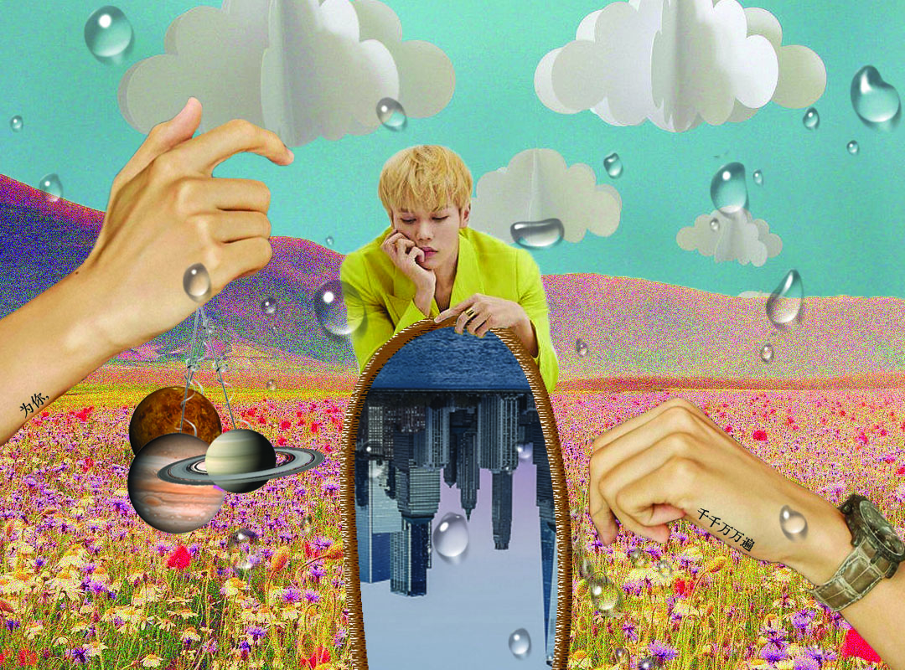
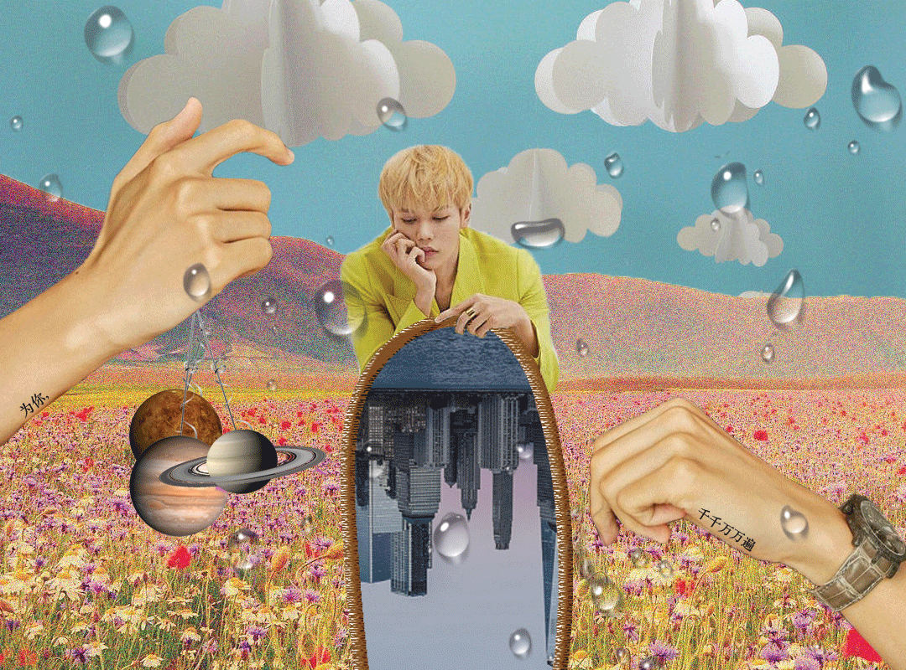

Head in the Clouds
Head in the Clouds utilizes different textures in a collage-style creation to add a retro technological tone to the image. The picture actually does not have much personal motivation behind it, but more of a conceptual one. My project is a visual representation of a whimsical and dreamlike state in my perspective where the audience is supposed to feel more youthful and happy. My influences for the piece relate back to vintage magazines, but specifically, the hand-cut collages people create from the magazines. This project doubles as an interactive image as well, delving into the process of Augmented Reality in art.
Phase 1: Image Creation
I wanted to utilize photos that have a somewhat nostalgic feel to them such as origami clouds behind a vintage flower field with added noise to create the feeling of a retro theme. I felt as if the image was too plain with just the centerpieces so I added a different photo from the same photoshoot and cropped just his hands out. The text on his hands translates to “For you, a thousand times over”, a quote from The Kite Runner. The planets were added because I enjoyed the realistic and high definition photo texture over the less realistic flower background. The planets did, however, feel out of place if they were floating so I added balloon strings to the image and had the hands hold it. In the gif, the planets are swinging.
Originally, the hands on the right side of the image were supposed to be sprinkling down he water droplets, however, when the water droplets were added I actually liked it on the overall image as a final overlay rather than just under the right hand. The original picture had him holding a hose, but I felt that it was not interesting so I added a random texture and included a city landscape inside. I had to flip it upside down to align the lines, but I think it looks better upside down than right side up in the end.
Phase 2: Gif Creation
Originally, I was considering having the gif be the water droplets moving, but it compromised the quality of the gif as well as made the gif appear too messy. I did not want the gif to be something too busy, so I opted for a simple gif of the plants swinging on their balloon swings. The gif was created for the intention of the next step.
Phase 3: Augmented Reality
By utilizing the gif and an application called Blippar, I was able to create an interactive video. By scanning the still image through the app, the user is able to view the video through their phone. This process is created using Augmented Reality as the app scans the digital information from the image and translates it into the gif. The video above is a screen recording demonstrating the process.